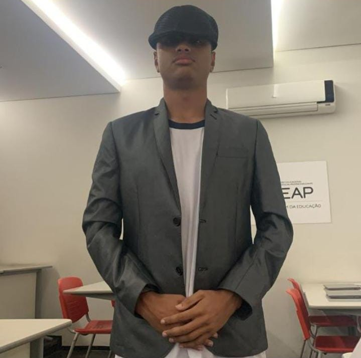

Agosto de 2022
Em busca da minha primeira vaga com o CEAP

Depois de muito tempo tentando entrar no CEAP, em agosto de 2022, eu finalmente consegui.
Entrei no curso de produção áudio visual (SPT), mas percebi que não era aquilo que eu queria.
Então troquei de curso e entrei para o curso técnico em informática (SIT), e aqui estou eu na jornada rumo à arrumar o
tão sonhado primeiro emprego.